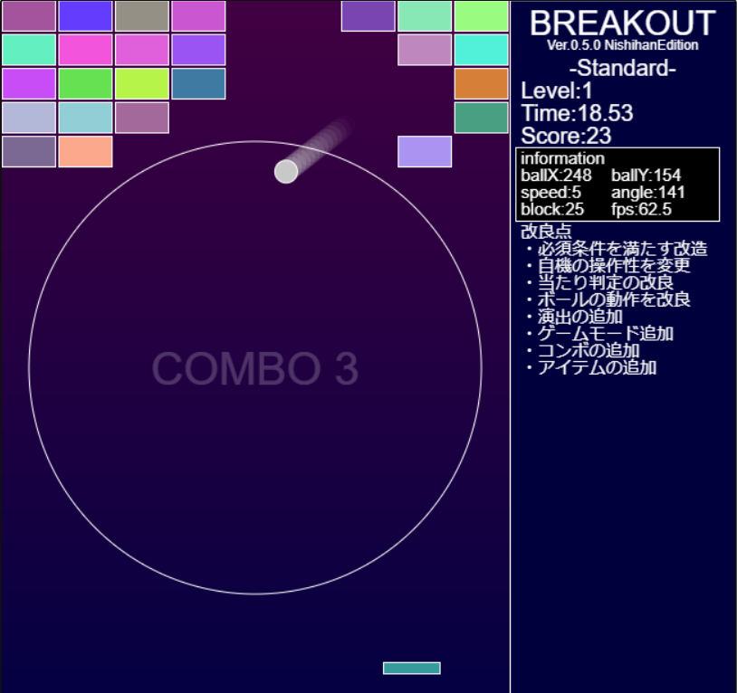
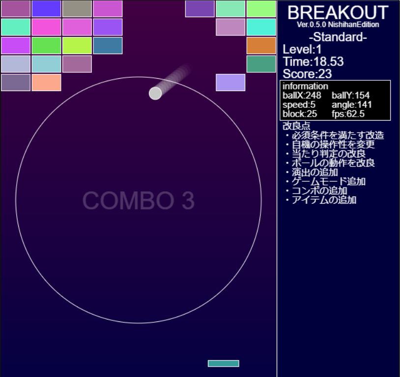

プログラミング技術部の紹介
 

↑過去の1年がProcessing(Javaっぽい言語)で作ったブロック崩しのプログラムとプレイ画像
プログラミング技術部って何?
プログラミング技術部はプログラミングをする部活です。(適当)
...まぁ、もう少し真面目に説明すると高専プログラミングコンテストの出場などのためにプログラミングの技術を教えあい向上させていくための部活です。
他にも名張祭(近大高専の文化祭)に展示するための作品を作ったりしています。
この部活では主にJava言語が使われていますが、先輩方にはC言語やPython、Unityなどを使える方もいます。
いろいろ説明したけど結構みんな自由に好きなことしてる部活だよ！
(みんな自由にしていて部活全体の明確な目標がよくわからんから説明がほかに特にない...)
ちなみにプログラミング技術に関してはプログラミング技術部よりロボット技術部のほうがかなり上だと思う
部活情報
- 活動場所
- 3号館3階CAI教室
- 活動日時
- 毎週木曜・金曜日 テスト1週間前からテスト最終日、祝日、長期休暇は部活なし
- 活動時間
- 15:55~17:00 CAI教室が空いていればもう少し早くても可
- 部員数
- だいたい30人くらい(適当)
- 顧問
- 制御情報系の先生2人 名前を勝手に出すのもどうかと思うからとりあえずふせとく
- 入部方法
- 活動時間中にCAI室に突撃 → 部長か副部長（まぁそれ以外でも大丈夫）に入部の意思を告げる → 部活のSrackに入る → 終了！
- 公式ホームページ?
- https://www.ktc.ac.jp/club/programming/
Q&A
- Q.プログラミングできなくても大丈夫?
- A.問題なし！初心者大歓迎だから興味があったりプログラミングの勉強がしたかったら是非入部を検討してください！
- Q.オレパソコン持ってないでど大丈夫?
- A.CAI教室っていう学校のコンピュータ室にあるパソコンを使うので問題なし！ 部活では大丈夫だが、制御情報コースに進むなら授業で使うのであった方がいい
- Q.他の部活もしたいんだけど、兼部っていいの?
- A.たぶん大丈夫！僕はロボコン部とかいう週6で活動してる部活と兼部してるけど何も言われたことはないよ！